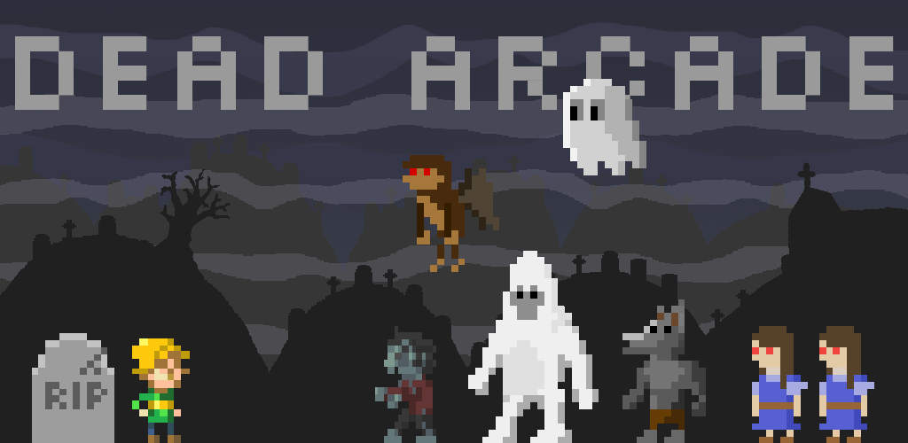
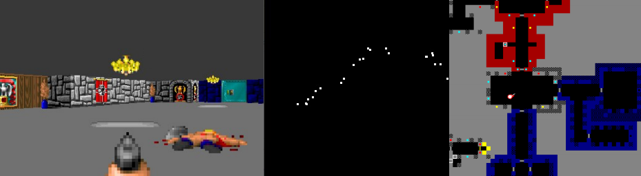
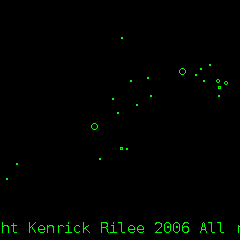
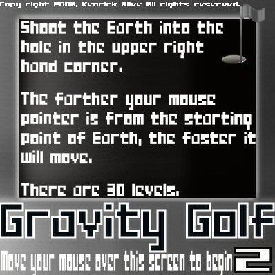
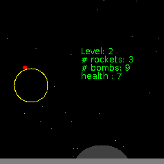
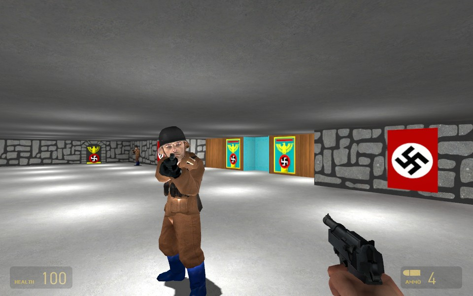
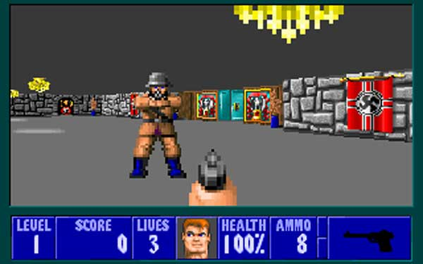

Summer of 2011, Justin Kruskal (coder), Melinda B (artist), and I built Dead Arcade, an Android game based on the original Mario Bros arcade game. The game engine we built relies on an entity/component model and renders with OpenGL.
Until Rex, this was my biggest project. It was the first time I'd worked with another programmer for a significant period of time and the first time I actually polished and published something. Since publishing it late 2011 (polishing it took a lot of time), it's been downloaded about 17,000 times.
I built this game from scratch in 24 hours for the Facebook Princeton Hackathon (2nd place!). It's a tower-defense real-time-strategy game. The AI relies mostly on gradient descent and a grid data structure.
Here's the sourcecode on GitHub.
Kynan Rilee and I built this game in just a few days for our COS 426 final project. It includes billiard ball physics, baked lighting, point/spot/directional light, simple object avoidance, boid AI, and more!
For our COS 429 final project, Kynan Rilee, Robert Timpe, and I built an AI that plays (and beats) the first level of Wolfenstein 3D. Unfortunately, I've lost the code, so I can't upload a demo.
My part of the project was figuring out how to localize the player. I used a particle filter that took, as input, randomly sampled depth measurements. These depths were determined by judging the height of the visible wall.
 (in-game view, randomly sampled depth measurements, inferred location).This game engine was built to be as flexible as possible. Unfortunately, at the time I didn't know much about common design patterns and I had just discovered Java generics.
Still, with the game engine was pretty simple and flexible. I was able to build a single-screen Mario Bros platform in just a couple of days and an Asteroids-style shooter in an afternoon. I dropped the project, however, after struggling for a few weeks to build an RTS using the engine.
Here's the sourcecode on GitHub.
In high school and early college, I made a bunch of simple Java games from scratch. These games are how I learned the basics of programming and began to grok principles like modular design, inheritance, thread-safe programming, and more. I consider these games a huge part of my education. It's by suffering through my own over-engineered or poorly designed game that I learned the value of simplicity.
  Wolfenstein: Source is a Half Life 2 mod I made in high school. The goal was to convert the classic Wolfenstein 3D video game to the Source engine. I built a Java program that would process Wolfenstein 3D maps and generate Half Life 2 levels. While the first level was playable, I never finished the project.
 Yoda Life is a Half Life mod I made freshman year of high school. It's Half Life, except every character is Yoda and all the weapons are from Star Wars.
{kind=link}